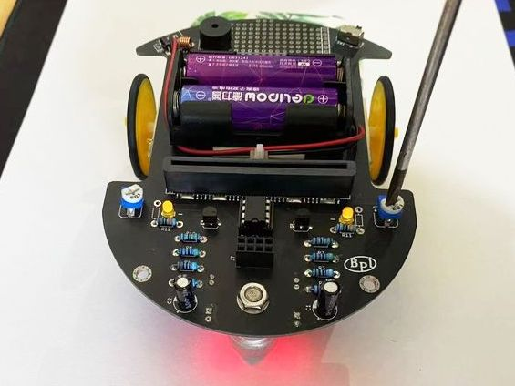

TriodeCar硬件分析及校准
驱动电路
这是一个最基础的电路：
电池，二极管，电感，手动开关四者串联，两个负载并联接入，一个负载是电机，一个负载是发光二极管，作为对发光二极管的保护又给其串联了一个用于分压的电阻。
在这样的电路中唯一能控制两个负载的只有一个手动开关。
这是PNP型三极管：

- 1脚 Emitter发射极
- 2脚 Base基极
- 3脚 Collector集电极
一般在原理图中三极管的E、B、C指的就是此三脚。
双极性结型晶体管（bipolar junction transistor, BJT），俗称三极管，是一种具有三个终端的电子器件。双极性晶体管是电子学历史上具有革命意义的一项发明，其发明者威廉·肖克利、约翰·巴丁和沃尔特·布喇顿被授予1956年的诺贝尔物理学奖。
双极性晶体管的一种类型即为PNP型，由两层P型掺杂区域和介于二者之间的一层N型掺杂半导体组成。流经 Base基极 的微小电流可以在 Emitter发射极 端得到放大。也就是说，当PNP型晶体管的 Base基极 电压低于 Emitter发射极 时，Collector集电极 电压低于 Base基极 ，晶体管处于正向放大区。
在双极性晶体管电学符号中， Base基极 和 Emitter发射极 之间的箭头指向电流的方向，这里的电流为电子流动的反方向。PNP型晶体管的箭头从 Emitter发射极 指向 Base基极 ，而NPN型与之相反。
想了解其更详尽的信息，可以继续参考维基百科：双极性晶体管，或者检索其他相关的文献资料，需要具备相应的 数理化 前置知识才能更好的理解。
将一个PNP型三极管加入电路：

设计这样的电路可以控制PNP型三极管的2脚 Base基极 电压，给予2脚 Base基极 电平信号，这个PNP型三极管即可作为一个开关使用， 1脚 Emitter发射极 与 3脚 Collector集电极 导通条件为2脚 Base基极 低电平，而当2脚 Base基极 为高电平时则关断，两个负载即可被2脚 Base基极 所接收到的电平信号所控制，而此电平信号则由 电压比较器 的输出端提供，通过另一个开关还可切换至由 micro:bit 或 web:bit 开发板来提供。
有关“高低电平”、“电平信号”更详尽的信息可以参考百度百科：逻辑电平，或者检索其他相关的文献资料。
巡线检测电路
在Triode-Car的底部，有两个巡线检测电路，每一路包含了一个光敏电阻和一个LED。当LED的光照到黑色和白色的材料上面时，由于反射率的不同，光敏电阻的阻值会发生明显的变化。

在Triode-Car上，光敏电阻使用的是GL5506，这个型号的电阻会随着光照的加强而减小，亮电阻（10Lux）是2-5KΩ，暗电阻是0.2MΩ。 亮电阻：用400-600Lux光照射2小时后，在标准光源（色温2854K）10Lux光照下的测量的电阻值。 暗电阻：关闭10Lux光照后第10秒测量的电阻值。
设计这样的电路：

除了用于保护作用的电容和电阻，在两个光敏电阻所在的线路上又各串联了一个可调电阻，根据串联分压的原理，通过调节可调电阻的阻值，可用于校准 LL 与 LR 两个节点的电压值，以便后续 电压比较器 的应用。
电压比较器
这是LM393电压比较器的原理图:


其内部集成了两个电压比较器，当电压比较器的同相输入端(IN+)大于反相输入端(IN-)电压时，输出高电平，反之则输出低电平。而其电压比较器的内部原理图则是这样：

由此可见，实现 “比较两个输入端的电压大小” 这样相对复杂的功能，也是基于二极管、三极管等基础元件来设计并封装而成的。
此处不对其做更深入的原理分析，感兴趣的可以参考维基百科：比较器，或者检索其他相关的文献资料。
将LM393电压比较器加入电路中，并补全驱动电路和巡线检测电路(单击图片可放大查看)：
U1A是LM393中第一个电压比较器，而U1B则是其第二个电压比较器。
将巡线检测电路的 LL节点 与U1A的正相输入端3脚连接，LR节点 与U1A的反相输入端2脚连接，再使 LL节点 与U1B的反相输入端6脚连接，LR节点 与U1B的正相输入端5脚连接。
这样设计，即可使 LL节点电压 > LR节点电压 时 U1A输出高电平，U1B 输出低电平，而当 LL节点电压 < LR节点电压 时 U1A输出低电平，U1B输出高电平。
由于LM393电压比较器使用的是集电极开路输出，所以需要在输出端U1A 1脚 和 U1B 7脚 加上上拉电阻 R8 与 R7 。
U1A 1脚 连接到了 Q2 2脚 Base基极，其控制的M2电机为右轮电机。
U1B 7脚 连接到了 Q1 2脚 Base基极，其控制的M1电机为左轮电机。
至此，我们就基本构建出一个自动控制系统，在其较为理想的工作状况下，它可以在一定范围内经由光敏电阻采集左右两侧道路明暗的信息，电压比较器在信息变化中不断的分别控制着两个轮子启停，以修正行驶方向，达成自动沿着线路行驶的目的。
各元件的信号与工作状态关系表
| 车头相较线路偏向 | (左)R5 LDR光感 | (右)R6 LDR光感 | LL 电位 | LR 电位 | P3输入 | P2输入 | P1输出 | P5输入 | P6输入 | P7输出 | M1左电机 | M2右电机 | 小车行进方向 |
|---|---|---|---|---|---|---|---|---|---|---|---|---|---|
| 左 | 明 | 暗 | 0 | 1 | 1 | 0 | 1 | 0 | 1 | 0 | 1 | 0 | 右 |
| 右 | 暗 | 明 | 1 | 0 | 0 | 1 | 0 | 1 | 0 | 1 | 0 | 1 | 左 |
条件为黑色线路与白色路面
当小车偏离线路向左时，右边的光敏电阻会来到黑色线路的上方，光敏电阻阻值变高，而左边的光敏电阻处于白色地面，此时，LL点的电压会比LR点的电压低，比较器U1A的正向电压高于反向电压，1号引脚输出高电平。同理，U1B的正向电压低于反向电压，7号引脚输出低电平。从而控制左边电机正转，小车右拐，R6和D2离开黑色线路，直到左边的传感器探测到黑线路，原理与前面类似。小车在前进过程中不断重复以上动作，从而达到沿着黑色的线路前进的目的。
巡线检测电路的校准
为了使巡线检测电路在单独使用LM393芯片控制的状态下有着对明暗变化更高的灵敏度，以及减少相同光照亮度下的电势差，需要通过手动调整可调电阻来进行校准。
校准步骤如下：
- 将小车用小物件微微将轮子抬起以防接触表面，将小车的光敏电阻对准一个稳定光源（台灯或手电筒）。
- 随意调整任一边可调电组，直到两侧马达同时运转。
- 调整完成后，放置在跑道上测试结果。
- 若小车还是有概率冲出跑道，将小车放置于白纸上，重复2~3步骤进行微调，尝试使巡线检测电路对明暗变化有更高的灵敏度。

